|
| Costume Design |
| 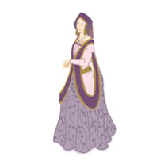 14th Century Juliet |
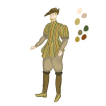 14th Century Mecutio |
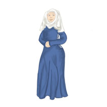 14th Century Nurse |
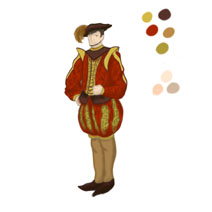 14th Century Romeo |
| 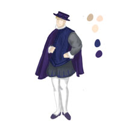 14th Century Tybalt |
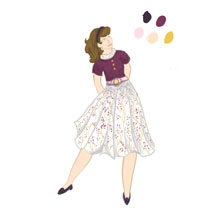 1950's Juliet |
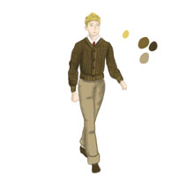 1950's Mercutio |
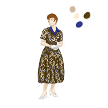 1950's Nurse |
| 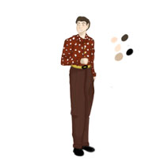 1950's Romeo |
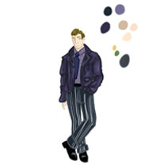 |
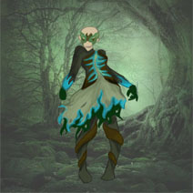 Dance Project - Banshee |
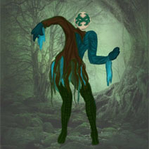 Dance Project - Drowned |
| 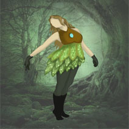 Dance Project - Fairy |
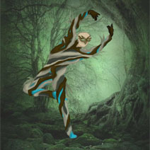 Dance Project - Hunted Tree |
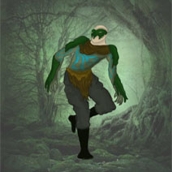 Dance Project - Moss Monster |
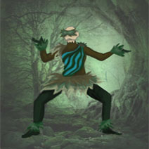 Dance Project - Poison |
Text Holder |
Text Holder |
Text Holder |
Text Holder |